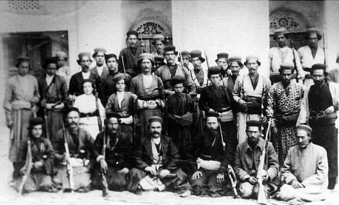
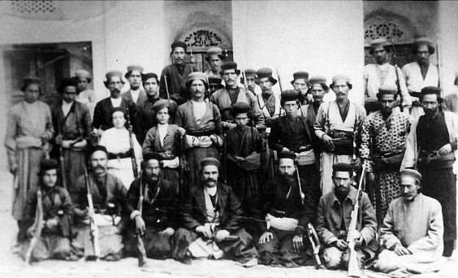

Right: Rais Ali Delvari and other fighters
Rais Ali Delvari (Persian: رئیس علی دلاوری) was an Iranian independent fighter and anti-British colonialism activist. He is remembered as a national hero in Iran who organized popular resistance against the British troops which had invaded Iran in 1915.
Rais Ali, son of Rais Mohammad, was born in 1882 in the suburb of Bushehr. In the age of constitutionalism he was 24, chivalrous, brave, unparallel in sincerity and famous for patriotism and reliance upon God. Subsequent to British occupation of Bushehr, Rais Ali courageously resisted the aggressors and imposed heavy defeats on them. After occupation of Bushehr, British forces decided to take over Delvar, a place they had earlier experienced heavy defeats. Rais Ali and his companions fought the occupiers and routed them who were nearly 5000 people. The uprising of people of Tangestan prolonged nearly for 7 years in which Daliran Tangestan (the brave of Tangestan) pursued two goals: guarding Bushehr, Dashtestan and Tangestan as their habitat and preventing the foreign forces from infiltrating the country and securing the independence of the country. The noble Rais Ali Delvari eventually was attacked from behind by a traitor and martyred on September 2, 1915, when he was 33